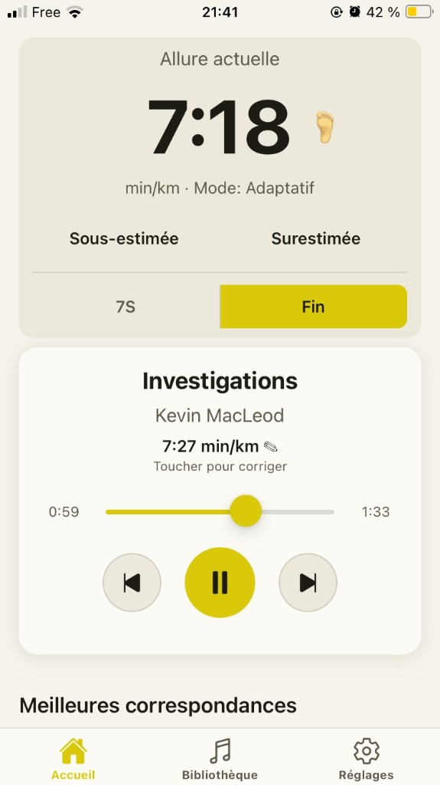
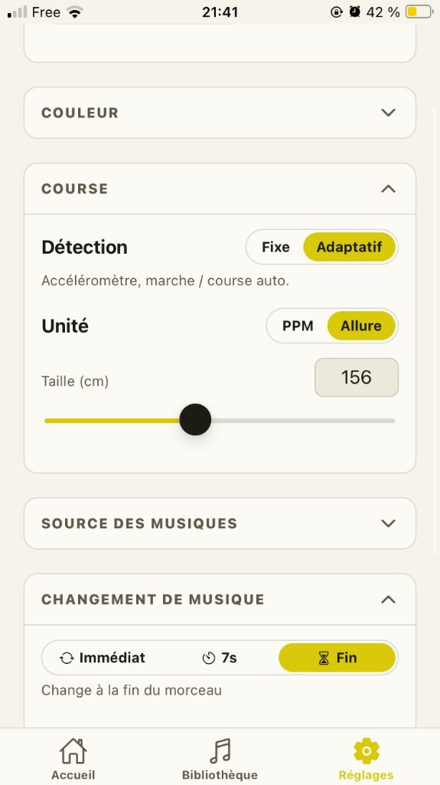
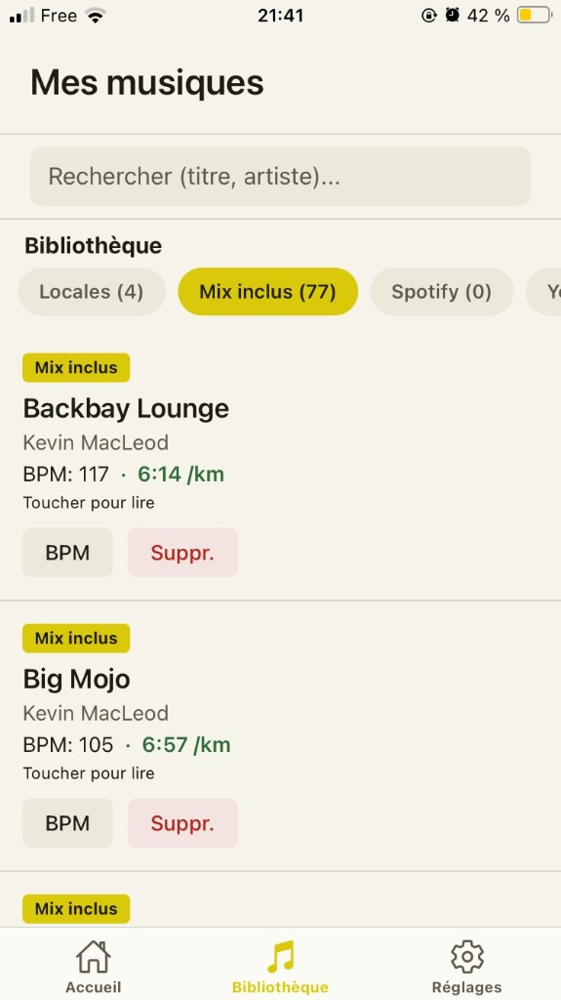

Adaptatif
Adaptive
Il s’adapte à toi
It follows you
Le capteur tourne. L’allure live change ? L’app bascule sur le bon tempo.
The sensor runs. Live pace shifts? The app switches to the right tempo.
BeatOnStep
Tu cours. L’app lit ton allure et met un titre au même rythme. Téléphone dans la poche — Android & iOS.
You run. The app reads your pace and queues a track that matches. Phone in your pocket — Android & iOS.
01 · Idée
01 · Idea
Une musique hors rythme casse la cadence. BeatOnStep envoie un titre dont le BPM colle au rythme de tes pas (PPM).
Music off the beat breaks your cadence. BeatOnStep queues a track whose BPM matches your step rate (SPM).
02 · Première sortie
02 · First run
Le mix inclus suffit pour tester. Tes playlists, plus tard.
The included mix is enough to try it. Your playlists can wait.
03 · Allure
03 · Pace
Adaptatif
Adaptive
Le capteur tourne. L’allure live change ? L’app bascule sur le bon tempo.
The sensor runs. Live pace shifts? The app switches to the right tempo.
Fixe
Fixed
Tu bloques PPM ou min/km. Le matching suit ta cible, pas le capteur.
You lock SPM or min/km. Matching follows your target, not the sensor.
Quand changer de titre : après quelques secondes (défaut 5 s), à la fin du morceau, ou tout de suite.
When to switch tracks: after a few seconds (default 5 s), at the end of the song, or right away.
04 · Musique
04 · Music
Mix inclus et musiques téléphone : lecture dans BeatOnStep. YouTube Music et Spotify s’ouvrent dans leur app.
Included mix and phone music play in BeatOnStep. YouTube Music and Spotify open in their apps.
05 · App
05 · App



06 · Technique
06 · Technical
Accéléromètre ~50 Hz, détection de pas, PPM lissé, puis matching des titres dont le BPM est proche (±10). Tolérance, anti yo-yo, crossfade 1 s en lecture locale.
Accelerometer ~50 Hz, step detection, smoothed SPM, then matching tracks whose BPM is close (±10). Tolerance, anti yo-yo, 1 s crossfade for in-app playback.
Flutter · Dart · Accéléromètre · PPM/BPM matching
FAQ & détail technique sur le site produit → FAQ & technical detail on the product site →
Essayer
Try it